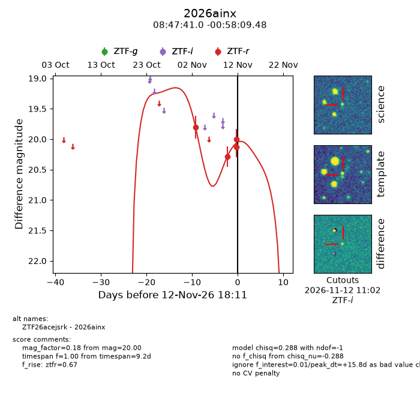
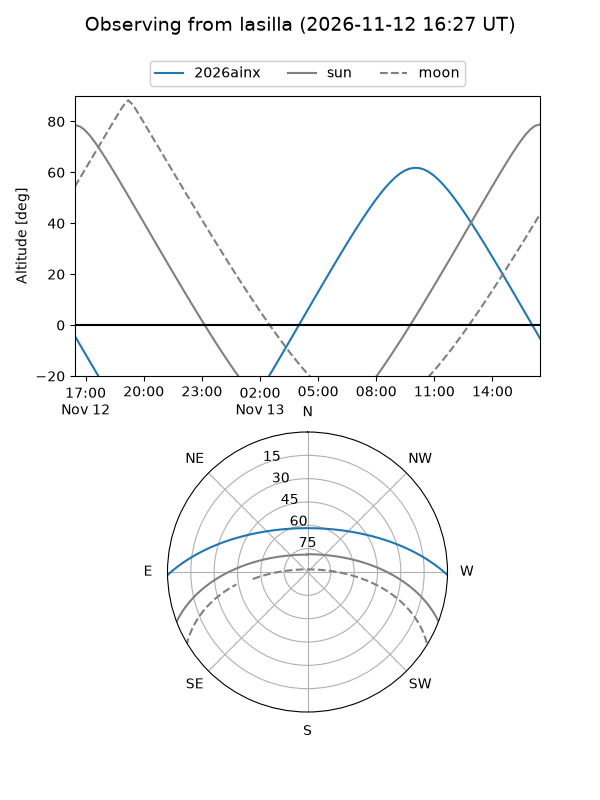
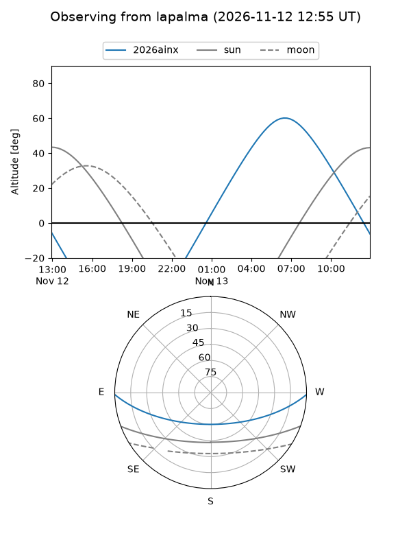
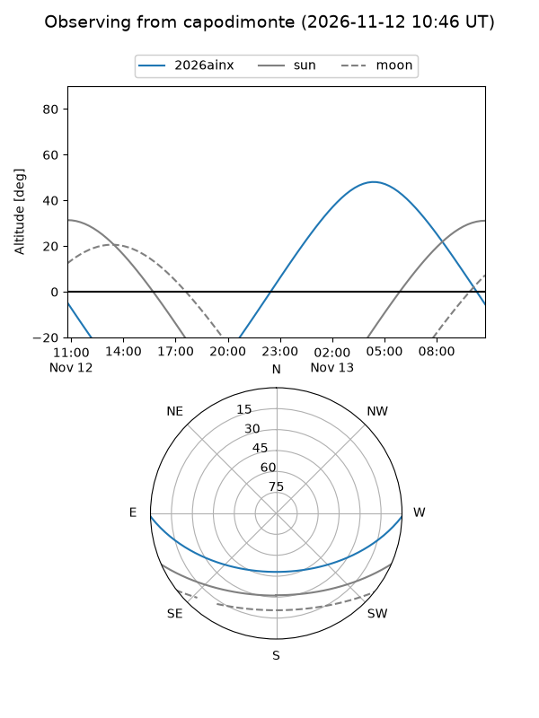
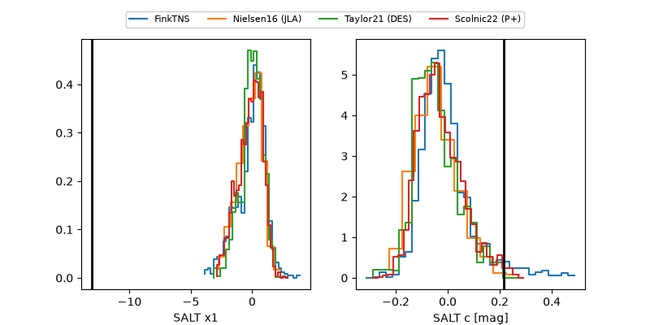

2026ainx
Target 2026ainx at 2026-11-12 18:12
Aliases and brokers:
FINK-ZTF: ztf.fink-portal.org/ZTF26acejsrk
Lasair-ZTF: lasair-ztf.lsst.ac.uk/objects/ZTF26acejsrk
ALeRCE-ZTF: alerce.online/object/ZTF26acejsrk
YSE-PZ: ziggy.ucolick.org/yse/transient_detail/2026ainx
TNS name: wis-tns.org/object/2026ainx
Direct TNS query: direct search
alt names
ZTF26acejsrk (ztf,fink_ztf)
2026ainx (tns,yse)
Coordinates:
equatorial (ra, dec) = 131.9209,-0.96930
equatorial (HMS+DMS) = 08:47:41.02,-00:58:09.48
galactic (l, b) = (228.0747,+25.12115)
Flags:
peak dt: +15.8
Photometry:
last ztfr=20.00
4 ztfr detections
Lightcurve

Visibility



Additional plots
